A BIM digital-twin and facility-management platform — the graduation project that turns an IFC model into a living, operational building.
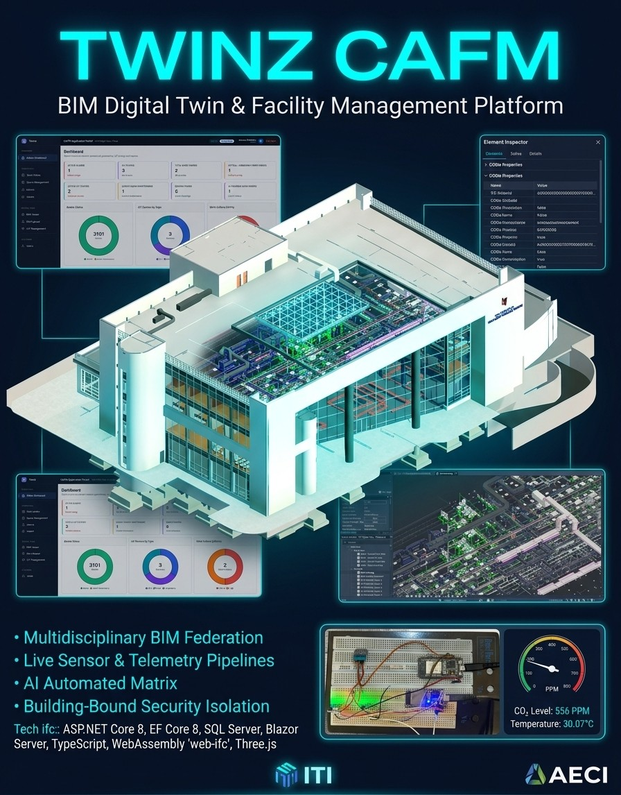
Facility information usually splits across BIM files, spreadsheets, maintenance logs, and people's memory the moment a building is handed over. Twinz keeps the IFC model alive: it extracts its spatial and semantic data, stores it in a proper CAFM database, and renders the geometry as an interactive 3D twin — so the model that was used to design the building becomes the model used to run it.
A TypeScript client parses IFC files in-browser via web-ifc (WebAssembly), classifies spatial structure, systems, and asset candidates, and packages the result as fragment geometry plus a CAFM seed. That package uploads to secured ASP.NET Core endpoints, which validate, stage, and transactionally import it through EF Core into SQL Server — with SignalR pushing live progress back to the browser.
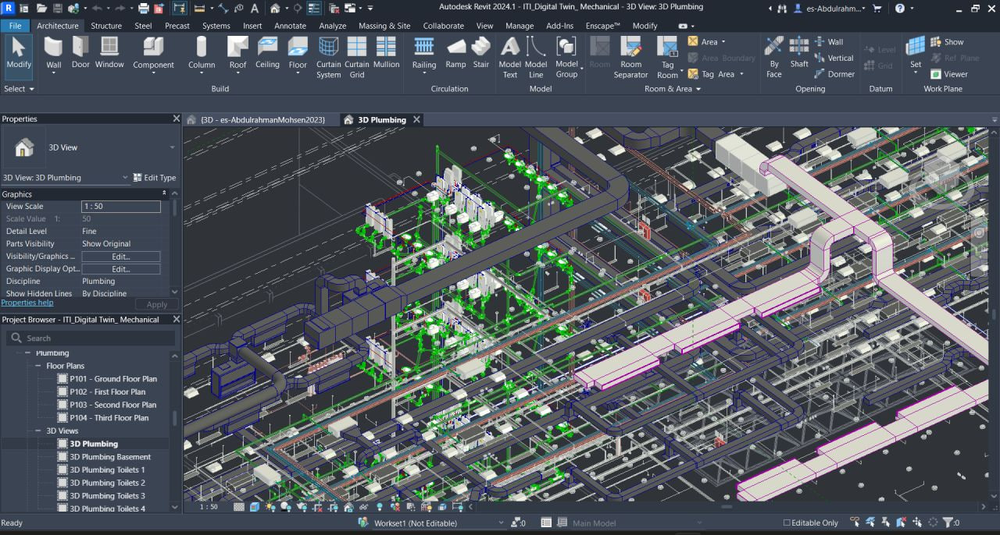
The underlying model isn't a simple box — it's a federated, multidisciplinary Revit model with architecture, structure, and MEP systems (visible above in the plumbing discipline view), the kind of dense geometry that makes IFC extraction and browser performance genuinely hard problems, not just plumbing for a demo.
Twinz deliberately separates IFC GlobalId (persistent identity across re-imports), Express ID (fast lookup within one viewer session), and database keys (relational identity for CAFM records) — so a re-exported model doesn't silently break every link the operations team has built on top of it.
Every user, request, and permission traces back to the building code established at IFC import — so "which building does this belong to" is never ambiguous.
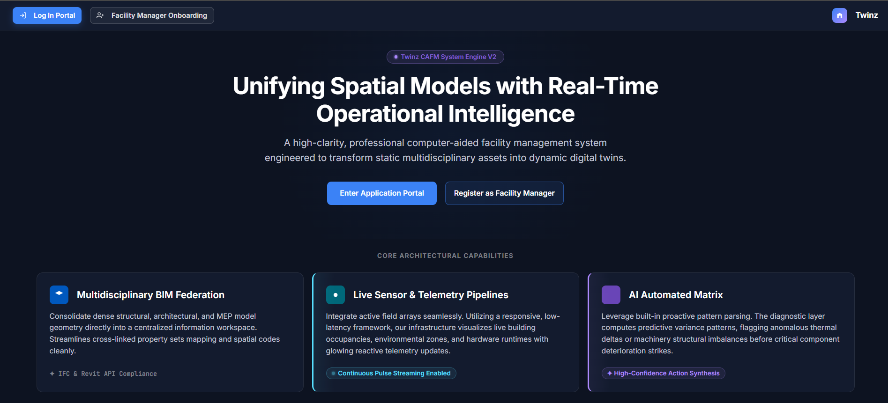
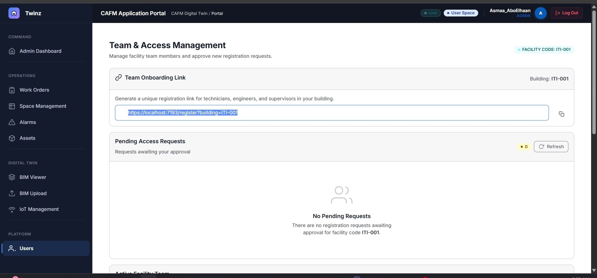
A Facility Manager registers directly and uploads the IFC model, which establishes the building's code. Every other role registers through a link that carries and locks that code — so the request is building-scoped before it's even submitted, and an admin can only approve requests inside their own building.
Approving a request creates the account, assigns the granted role, records the reviewer, and issues a temporary credential that forces a password change on first login — closing the loop between "who asked for access" and "who's accountable for granting it."
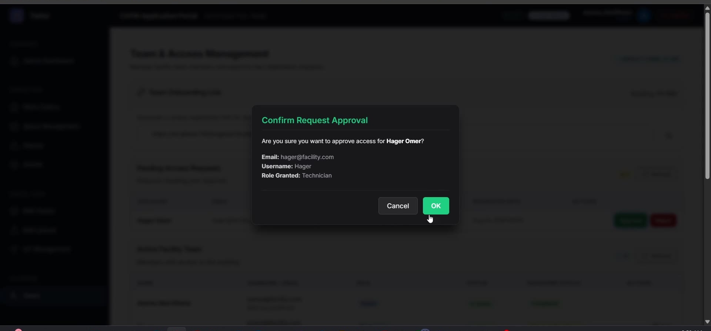
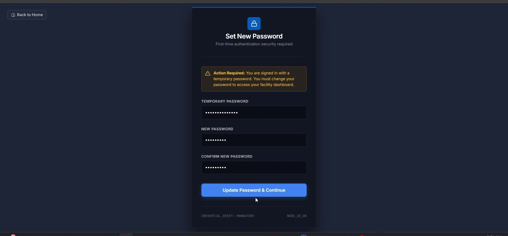
Once imported, the model isn't just stored — it's rendered live in the browser, with every element traceable back to real operational data.
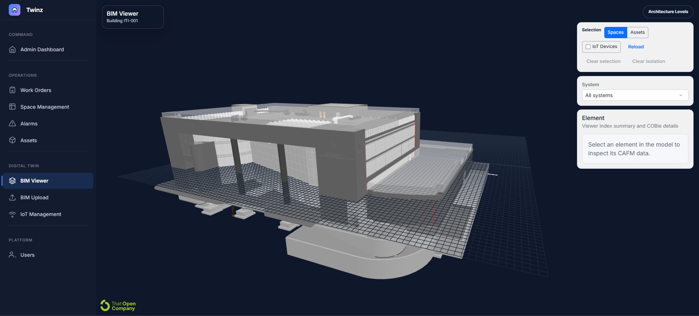
The architecture-level panel lists floors pulled directly from the IFC hierarchy — "Roof Floor Level_TOC," "Third Floor Finish Level" — each flagged as an exact match, so navigating the twin means navigating the same levels the architects actually modeled.
Selecting any element opens an inspector with its class, floor, space, system, and full COBie property set — area, space code, manufacturer, model — plus a direct action to link it to an operational CAFM asset when it isn't linked yet.
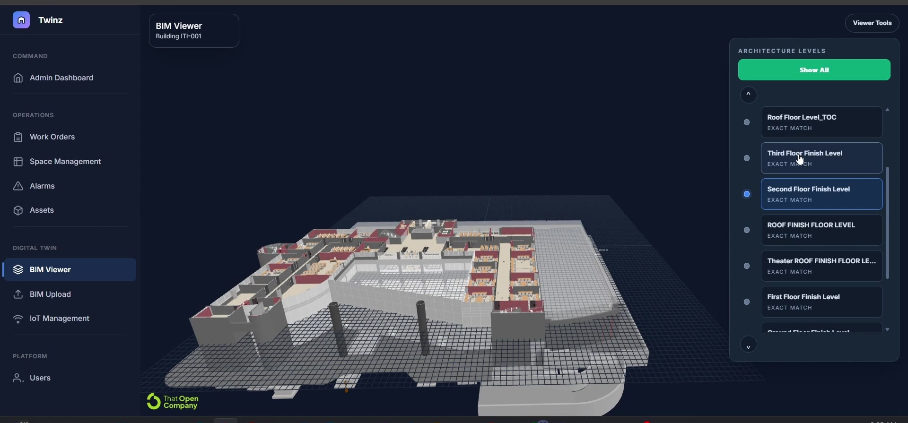
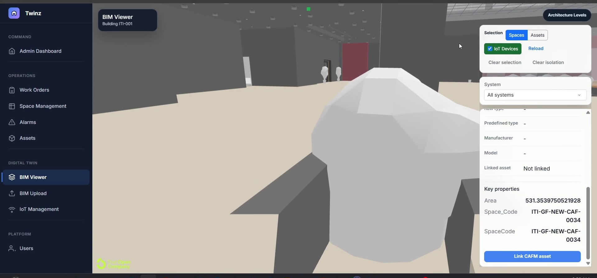
Toggle IoT Devices on and sensors appear as live markers in the 3D space itself. Selecting one surfaces its real-time reading, status, and bound space directly in the viewer — this is the moment the "digital twin" claim stops being a slide and starts being a screen.
The renders below are from the same design — the atrium and a library floor — a reminder that every element in the viewer maps to an actual designed space, not an abstract test box.
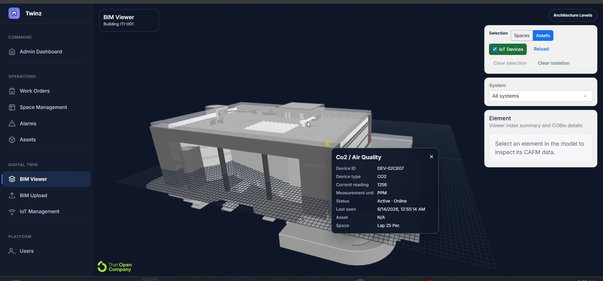
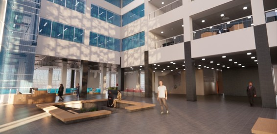
The viewer is the centerpiece, but the operational modules are where a digital twin has to prove it's useful, not just impressive.
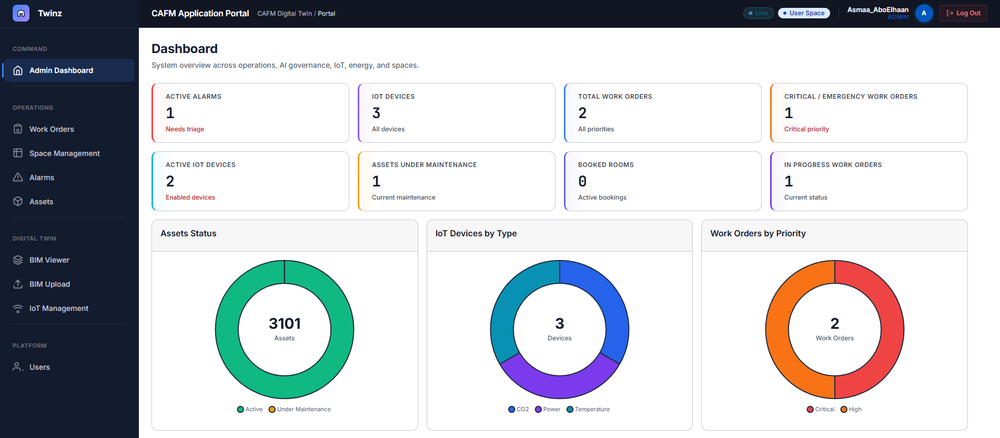
Creating a manual work order filters spaces by floor and assets by space — a real hierarchy instead of three unrelated dropdowns — then tracks status, due date, estimated hours, and documentation links against a rich underlying model with concurrency protection and full audit timestamps.
The Alarm Management Center reads "LIVE SIGNALR STREAM ACTIVE" for a reason — active and acknowledged alarms show the reading against its limit, the triggering device, and the bound space, so triage starts from the actual number that tripped it.
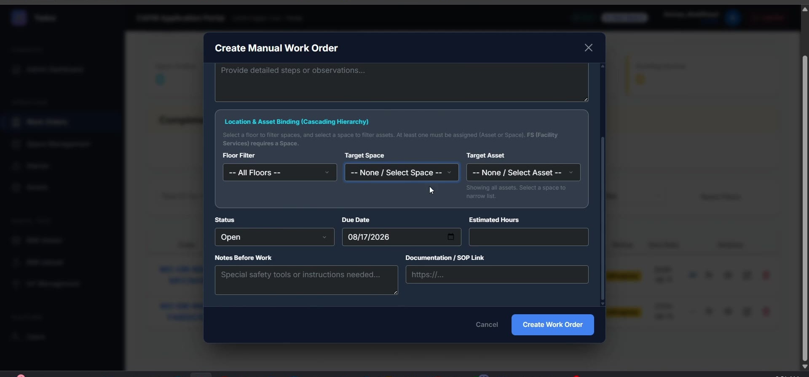
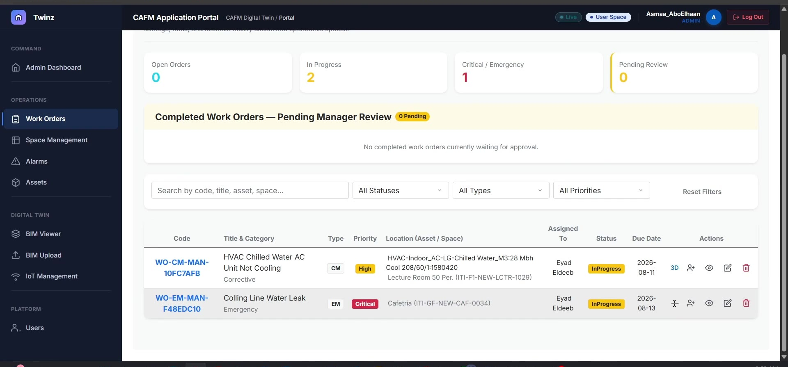
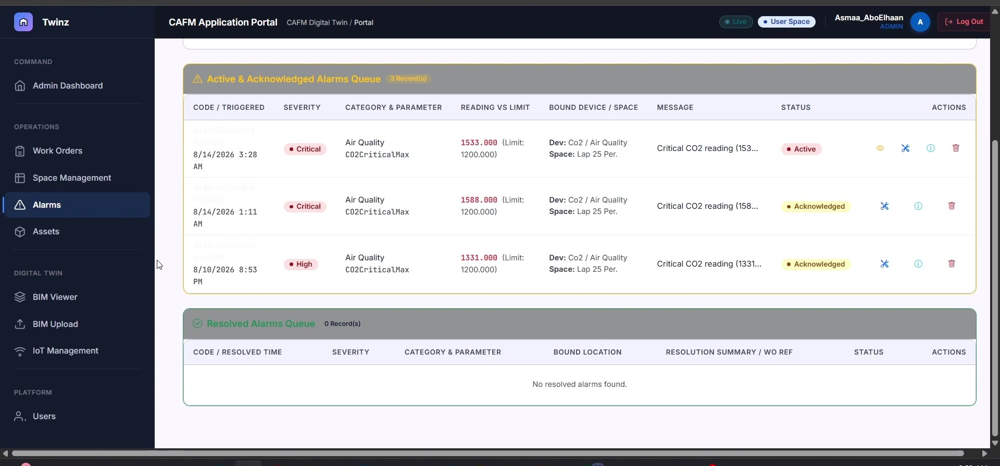
The IoT layer isn't a mocked feed — it's backed by an actual ESP32 breadboard prototype reading CO2 and temperature, pushing telemetry the platform ingests and displays with live averages, per-device stability status, and threshold configuration.
The registration chain, BIM import, 3D viewer, level navigation, and element inspection are the strongest, most complete paths. Work-order automation, space/booking workflows, energy monitoring, and AI governance have real data models and UI, but the full operational lifecycle behind them is still being finished — the project documentation is explicit about this, and so am I.
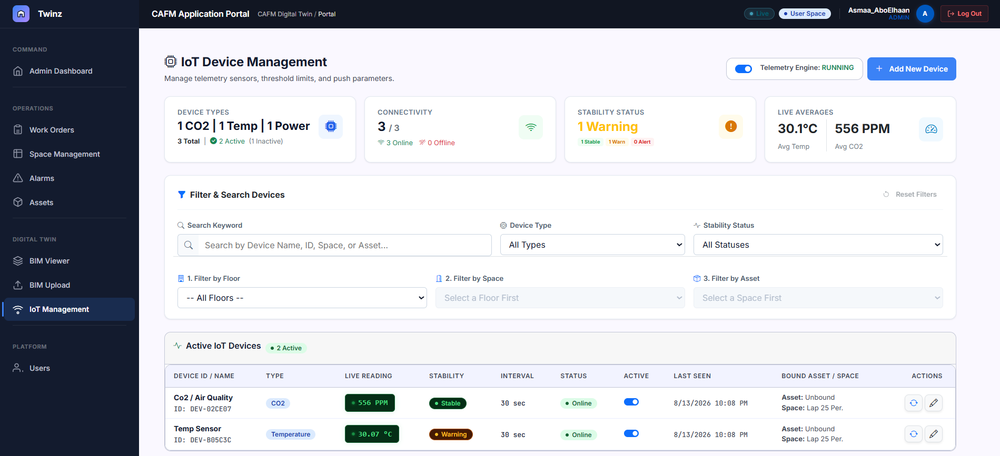
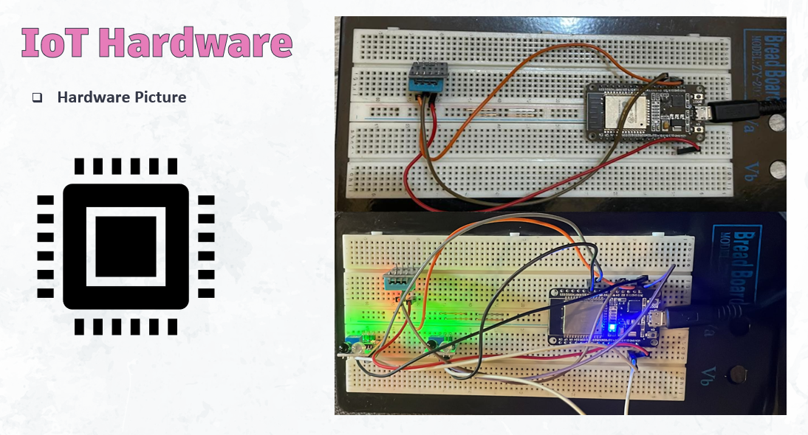
C# domain model files
EF Core migrations
Backend & frontend test files
Operational roles & policies